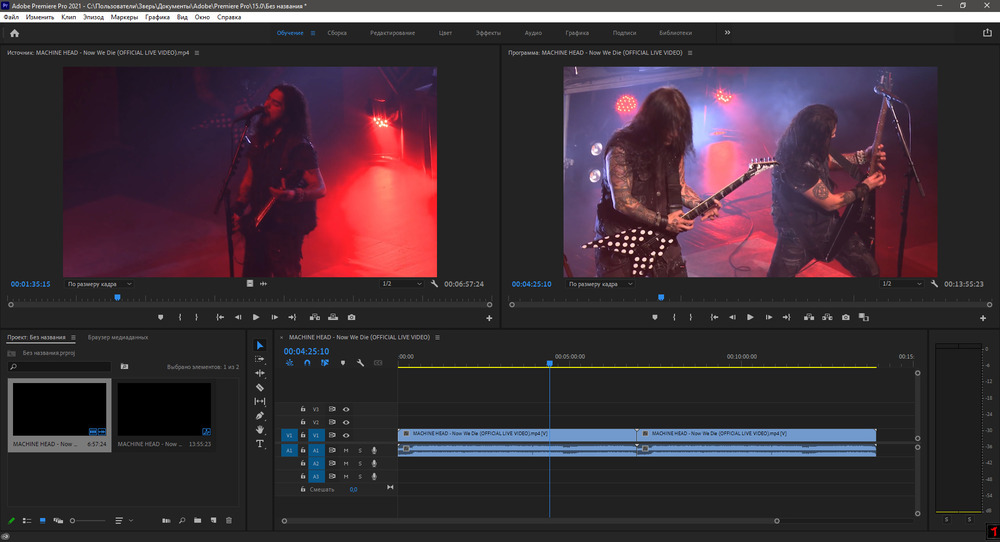

_____________________________________________________________________________________________________________
Adobe Premiere Pro — профессиональное программное обеспечение для монтажа видео. Здесь вы найдете все нужные функции: замену звука и наложение музыки, обрезку и соединение файлов, добавление титров и надписей, применение эффектов и цветокоррекцию. Также редактор позволяет импортировать пресеты для обработки из интернета или создать их самостоятельно. Софт поддерживает большинство известных форматов. Вы можете скачать Адоб Премьер Про бесплатно на русском, он работает на Windows и MacOS
Бесплатная версия Adobe Premiere Pro CC поддерживает все популярные форматы: AVI, MP4, MOV, MPEG, QuickTime, PSD, JPG, PNG, AIF, MP3 и другие. Также он позволяет редактировать видеоролики с разрешением до 8К и экспортировать результат в высоком качестве. Скачать Adobe Premiere Pro можно и для работы с файлами виртуальной реальности (VR). Вы сможете загружать, редактировать и экспортировать такие документы.
В Premiere представлены инструменты для редактирования звука, такие как микшер треков и эквалайзер. Начинающим пользователям доступны базовые настройки аудио, например, изменение громкости, тембра и создание эхо. Также скачать Адоб Премьер Про можно ради удобной обрезки аудиодорожки, нарезки ее на несколько выбранных фрагментов и записи голоса.
Логотип Adobe Premiere Pro

Пример работы в Adobe Premiere Pro
Главные преимущества Adobe Premiere Pro:
Главные недостатки Adobe Premiere Pro:
A подробное описание данной программы и как ею пользоваться можно посмотреть в видео ниже: Adobe Premiere Pro
Как пользоваться программой Adobe Premiere Pro